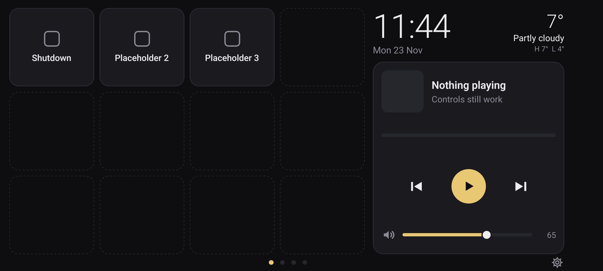
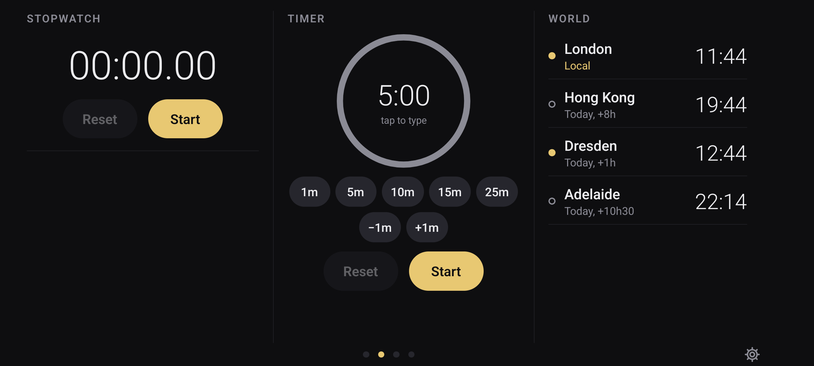
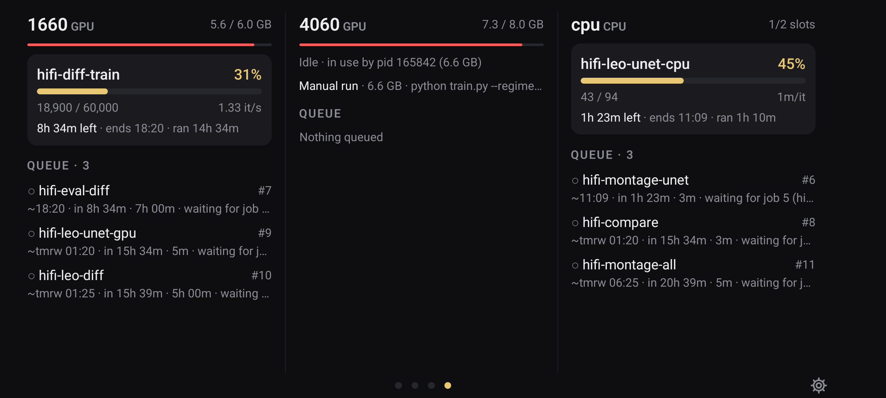

Overview
Three small tools that ended up as one system. Deck turns an old Pixel 7a, plugged into the PC and lying in landscape, into a custom Stream Deck: a shortcut grid, media controls, a clock and weather. Monitor is a tiny always-on-top desktop widget for GPU, CPU, RAM and disk usage. jobq is a job queue for the workstation's GPUs and CPU. Deck is the screen that ties them together.
It started as a convenience project: easier access to media and shortcuts without buying a Stream Deck, using hardware already sitting in a drawer. Monitor and jobq came later, once the same machine was running long AI training jobs at home on two consumer GPUs, and keeping track of what was running, what was waiting and when it would finish became the real problem.
Screenshots from the phone



Motivation
The original itch was simple: media keys, volume and a handful of shortcuts within reach, without alt-tabbing to a music player or remembering key combinations. A Stream Deck does this, but an old phone already has a touchscreen, a USB port and enough compute to run a React Native app, so Deck was built as a custom one: landscape-only, dark, and configured entirely from JSON files on the PC.
Then the workstation became a training machine. With models training for many hours on a GTX 1660 and an RTX 4060, the questions changed: is the GPU actually busy, how much VRAM is left, which run finishes next, and can the next experiment start the moment a card frees up — at 3 a.m., without waiting for someone to type the command? Monitor answered the first two. jobq answered the rest. And since the phone was already on the desk and always on, Deck grew a System slide and a Jobs slide to show both at a glance.
A custom Stream Deck for media and shortcuts: an old phone, a Python daemon on the PC, and a settings web app.
A floating desktop widget for GPU utilisation, VRAM, temperatures, CPU, RAM and disk space, to see training load without opening a terminal.
A queue and scheduler for every GPU and CPU job on the machine, so training and evaluation runs start, chain and report progress on their own.
Deck
Deck is three parts. A React Native (Expo) app runs on the phone. A Python daemon on the PC runs one aiohttp server for the phone's WebSocket, the settings web app and its REST API. The settings web app (React + Vite) edits every field of the config, and the phone updates straight away. The phone talks to the PC over the USB cable: the daemon watches adb devices and re-runs adb reverse whenever the phone reconnects, so the app just connects to localhost.
What each slide does
- Main — a 3×4 shortcut grid (key combinations, shell commands or URLs), a clock with Open-Meteo weather, and a media widget reading the OS media session (MPRIS on Linux, SMTC on Windows) with cover art, seeking and volume.
- Clocks — a stopwatch with laps, a timer with presets and a keypad, and world clocks whose UTC offsets the daemon works out. The stopwatch and timer run entirely on the phone, from timestamps, so they don't drift.
- System — live CPU, memory, NVIDIA GPU and disk usage of the PC, sent once a second only while the slide is open.
- Jobs — the jobq queue, live: per GPU and CPU, the running jobs with progress, rate and ETA, other processes on the GPU, and the queue with predicted start times.
The JSON config files are the only source of truth: the phone, the web app and hand edits all change the same files, and the daemon pushes a new config to everyone when one changes. The message and config types are defined once as pydantic models in the daemon, and the TypeScript types for the app and the web app are generated from them, never written by hand. The daemon runs as a systemd user service on Linux and a Scheduled Task on Windows.
Monitor
Monitor is a single Python file: a small, borderless, always-on-top tkinter window showing each NVIDIA GPU's utilisation, VRAM and temperature, plus CPU load and temperature and system RAM, with a second window for disk space per mounted drive. It has no third-party dependencies — it reads nvidia-smi, /proc/stat and /proc/meminfo directly — so it runs anywhere Python does.
- Bars change colour as usage climbs past 70% and 90%, so a full card stands out at a glance.
- Drag to move, double-click for a compact mode, right-click for a menu.
- The same readings later became Deck's System slide, so they are visible even with the desktop full of windows.
jobq
jobq is a job queue for one workstation. Each compute unit — one per GPU, identified by UUID so device renumbering never picks the wrong card, plus the CPU — has its own ordered queue and a number of slots. Jobs start when their unit is free and their conditions hold, report progress, and can be inserted, reordered, held, rescheduled, edited or cancelled at any time.
jobq add --name unet-eval --on 1660 --est 1h -- uv run python evaluate.py --run unet
jobq add --name compare --on cpu --depends 3 -- uv run python compare.py
jobq add --on 4060 --attach 'out/*.png' --attach-log -- python train.py
jobq ls --watch
jobq move 4 --front
jobq schedule 4 --at 23:30Scheduling
- Conditions — a job can depend on another (--depends), wait for a start time (--not-before), or run a bash check just before starting. A job that isn't ready doesn't block the ones behind it.
- Shared GPUs — processes jobq didn't start (manual runs) are listed, and a GPU using more than 1 GB elsewhere counts as busy unless the job declares how much memory it needs.
- Progress — a job prints @jobq progress <iter>/<total> (or calls jobq.report() in Python), or jobq reads its existing output with a regex. Rates are smoothed, and ETAs chain through each unit's queue using estimates or the last run time of similar jobs.
- Notifications — every finished job can send an email with its state, timing, final metrics, the end of its log, and any files it asked to attach (plots, CSVs).
The scheduler, jobqd, runs as a systemd user service that starts at boot. State lives in SQLite on the local disk, with every change written to an event log. A local JSON API on 127.0.0.1 serves the status and a server-sent event stream; reads are open to local clients and changes need a token. Deck's daemon follows that stream only while the Jobs slide or the web app's Jobs page is open, and relays it to them.
Challenges
The daemon only listens on 127.0.0.1, but websites in the browser can still send requests to localhost. It checks the Host header (against DNS rebinding), rejects writes and WebSocket connections from any other Origin, requires JSON for writes and never sends CORS headers. Remote access goes through tailscale serve, and only the machine owner's Tailscale login is let in.
Training runs last many hours, so restarting or updating jobqd must never kill them. Each job is its own session, the service is set to leave its processes alone, and the next jobqd picks them up from the database and follows them to the end. After a reboot, jobs whose process has gone are put back at the front of the queue, or marked interrupted.
Deck has a Python daemon, a React Native app and a React web app all speaking the same protocol and editing the same config. Rather than keep three copies in sync, the pydantic models are the single definition, a script generates JSON Schema and TypeScript from them, and the app and web builds fail if the generated files are out of date.
The phone may have no SIM or Wi-Fi, so its clock drifts. The daemon sends its own time on connect, and the phone shows PC time from the offset — which also lines up the screen's periodic blink (a burn-in guard) with the wall clock.